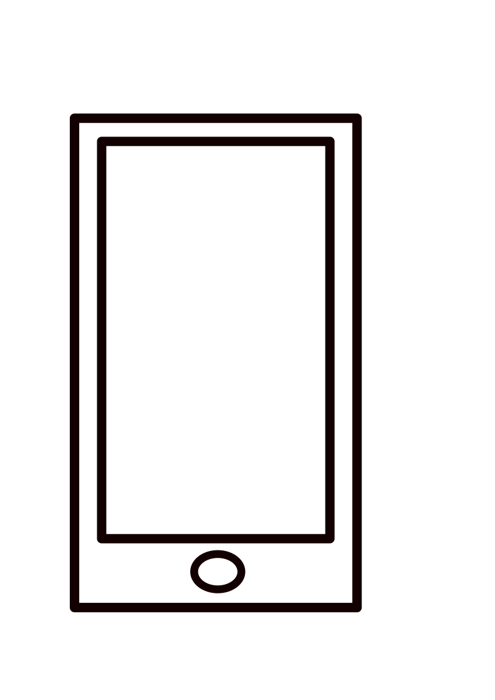
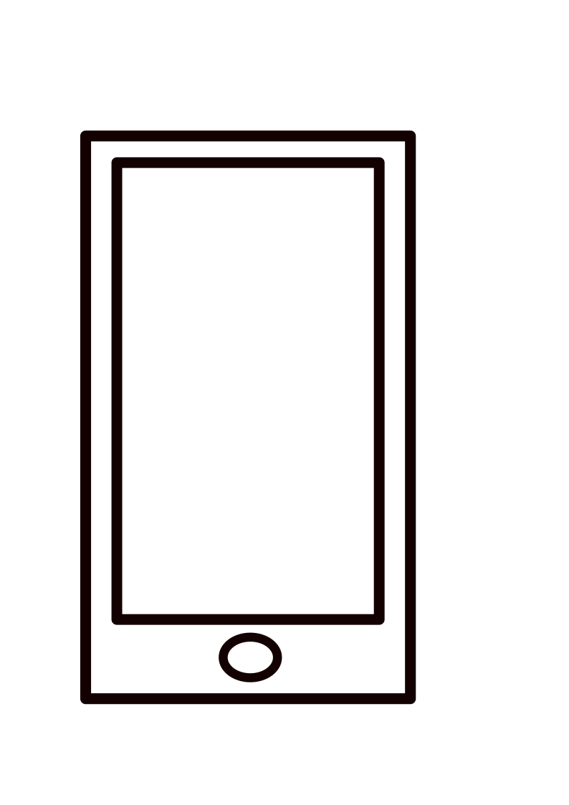

CURRICULUM VITAE
Uedre Vivian

(+687) 85 76 74
Apprenant Développeur Web et Web Mobile, je suis actuellement à la recherche d'une entreprise pour y effectuer mon alternance.
Uedre Vivian
(+687) 85 76 74
Apprenant Développeur Web et Web Mobile, je suis actuellement à la recherche d'une entreprise pour y effectuer mon alternance.
Dans le cadre de mon stage j'ai effectué un
suivi de production
pour les pièces en béton
dans le Parc Matériel de l'entreprise.
Réalisation de l'inventaire, consultation de la
documentation technique,
mise page des
informations, mise en page du catalogue
(pagination, code couleur, etc...)
Dans le cadre de mon service civique j'ai été
amené à effectuer un suivi de patients.
Ainsi que la mise en place de dossier, la prise
de rendez-vous
Référent de la Ligue contre le cancer au CRNC (Centre de Radiothérapie)
2019-2020 Classe préparatoire ATS
(Assistant Technique Supérieur)
2017-2018 BTS ATI
(Assistance
Technique D'Ingénieur)
2016 Baccalauréat Scientifique
Utilisation des outils de bureautique de Microsoft (Word, Power Point, Excel)
Niveau Satisfaisant en Anglais et en Espagnol
Connaissance de quelques languages de code (JavaScript, HTML, CSS)